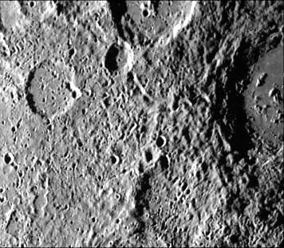
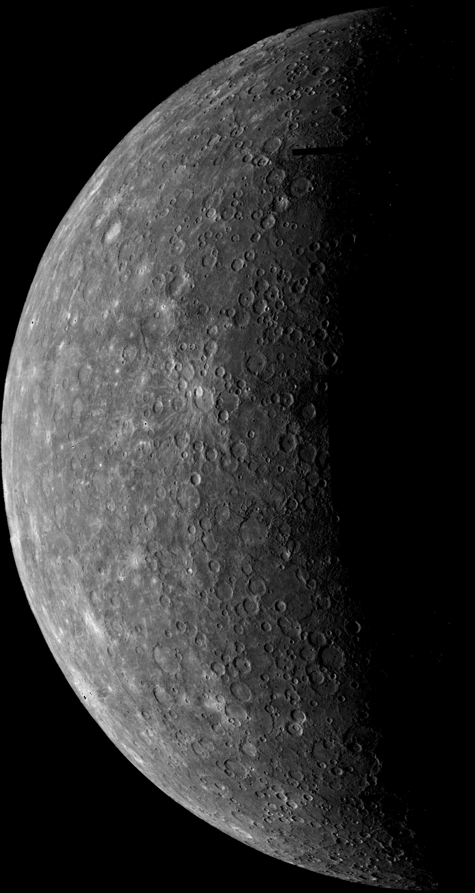

Ogólne informacje
Merkury to najmniejsza planeta w układzie Słonecznym. Znajduje się najbliżej Słońca, jednak nie jest najcieplejszą planęta w układzie Słonecznym. Nie ma atmosfery jednak jego temperatura powierzchni waha się między -173°C a 427°C. Nie posiada żadnych naturalnych satelitów. 1 obrót Merkurego wokół własnej osi wynosi tyle co 58 dni, 15 godzin i 26 Ziemskich minut. Orbita wokół Słońca zajmuje mu tylko 88 Ziemskich dni.Powierzchnia i budowa
Wyglądem bardzo przypomina nasz księżyc, ale różni się tym że posiada płynne żelazne jądro generujące pole magnetyczne. Rozmiar jądra sprawia że Merkury jest najgęstsza planetą w układzie Słonecznym. Na Merkurym jest wiele kraterów po uderzeniach.

